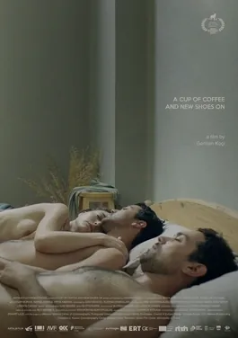

The genetics
Genetics enters as fate. The brothers learn from an eye specialist that they share a rare, inherited degenerative disease that will make them blind, one after the other; the sources do not name it. Because they are deaf and communicate by sign language, blindness threatens to cut them off from the world and from each other, and the film focuses on their bond and on the decision they make, not on medicine. The diagnosis is presented factually, without villains or scientific drama, and no treatment is discussed. The film draws on the case of deaf twin brothers from Putte, Belgium, who were granted euthanasia in 2012 because of the unbearable prospect of blindness; the title alludes to the coffee and new shoes of their last day. Identical twins share their genome, so an inherited disease that strikes one will usually strike the other, which is precisely the situation the film dramatizes.
How genetics is portrayed
- Overall portrayal of genetics
- neutral Genetics appears as an inherited disease diagnosed by a doctor, presented factually as an inescapable fate; the film's interest is the brothers' bond and choice.
- Outcome of the genetic intervention
- not applicable No one does genetic work; the inherited disease is only diagnosed.
The story
Agim and Gezim are inseparable deaf identical twins in their forties who live together in Tirana, work side by side in a carpentry workshop and spend their free time in a cabin in the mountains; Gezim's girlfriend, Ana, visits them regularly. Being deaf from birth has hardly limited their lives. One evening Agim's vision blurs while he is driving and he barely survives an accident. An ophthalmologist diagnoses both brothers with a rare, genetic, degenerative disease that will make them blind progressively and irreversibly, Agim first and Gezim later. As darkness closes in and the brothers face the prospect of losing their last means of communicating with the world and with each other, they make a grave decision together, over a cup of coffee and with new shoes on. The film is inspired by the real case of deaf twin brothers in Belgium who chose euthanasia in 2012 when they learned they would go blind.